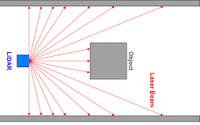

Introduction d'un robot
Comment réaliser un robot ?
Tout d'abord, il faut décider de quoi faire -> Il faut rédiger une sorte de cahier des charges.
Ensuite, il faut réunir la liste du matériel nécessaire, lesquels sont à commander par exemple.
Enfin, il faut établir la gestion du projet, c'est à dire savoir qui fait quoi et à quel moment pour ne pénaliser personne dans son travail, c'est à dire décider d'un calendrier de formation, de deadlines,... Des exemples de timeline pour l'année sont sur le guide du nouvel arrivant, ici.
Ainsi, en ordre d'idée, il faudrait idéalement que le robot roule déjà dès fin décembre, et qu'il est capable de marquer des points en février.
Par exemple celui-ci : 
Le cahier des charges
Pour que tout le monde soit d'accord, il est impératif d'avoir un cahier des charges. Il peut être assez court (quelques pages avec photos), mais il doit contenir l'essentiel, c'est à dire identifier à partir du réglement des "fonctions" à réaliser (se déplacer, récupérer X objet, afficher le score,...) afin que tous les membres aient la même idée des objectifs à atteindre. Pour chaque fonction, il faut des critères avec une valeur de performance à atteindre. Il peut bien évidemment être modifié au cours de l'année.
Exemple :
| Fonction | Critère | Niveau |
|---|---|---|
| Se déplacer | Vitesse max | 0.8 m/s |
| précision | +- 2 cm | |
| Accélération min | 0.3 m.s² | |
| Vitesse angulaire max | 1 rad/s |
Les specs du robots
L'idée est de recenser toutes les piéces que composera le robot (même ceux imprimés en 3D), et d'indiquer l'état d'avancement (en cours de design/de commande, en cours de test,...). Pour ceux qui sont à commander, c'est le moment de voir le prix pour avoir une idée du budget du robot. Ensuite, on peut faire l'inventaire de ce qui est nécessaire pour la carte électronique. Enfin, on peut définir comment fonctionnera le code dans les grandes lignes (quel "language" de communication entre la carte électronique et les ordis, quels fonctionalités sont impératives, lesquelles sont facultatives,...").
Un exemple de "cahier de specs" (2022)
De quoi est constitué un robot ?
Pour des tutos plus approfondis, cliquez ici (VRAC)
Base roulante
La base roulante est tout ce qui permet au robot de "rouler" sur la table. Cela inclut les moteurs, les roues, les capteurs pour se localiser, l'électronique pour le déplacement et la localisation (à l'ENAC généralement une carte électronique assure tout le robot), et les batteries. C'est la partie essentielle du robot, à réaliser en premier. Sans base roulante fiable, on ne peut rien faire.
Les robots différentiels
Le principe de ces robots est d'avoir 2 roues (généralement centrés sur le robot), avec généralement des patins à l'avant et à l'arrière pour que le robot ne bascule pas. On envoie des consignes de vitesse individuelles à chaque moteur ce qui permet de tourner sur soit même, d'avancer, ou de faire des trajectoires courbées :

Les robots omnidirectionnels :
Ceux-ci ont la faculté de se déplacer dans toutes les directions grâce à la forme spéciale des roues.
Un exemple de gif pour un avec 4 roues :

On peut également en retrouver à 3 roues, généralement pour faire des robots triangulaires. Le seul désavantage des 3 roues est qu'il n'est pas capable de passer par dessus un obstacle, contrairement à celui à 4 roues qui pourrait.
Pour tourner sur lui même, il suffit de faire tourner les 3 roues dans un sens, et pour se déplacer dans une des trois directions, il suffit de faire avancer 2 roues adjacentes (la troisième roue roule "latéralement" => Pas de frottement )
Le désavantage des robots omnidirectionnels est qu'il est plus compliqué de se repérer dans l'espace avec ceux-là (à voir partie localisation).

La motorisation
Des moteurs électriques, assez basique, ~12-18V, 10W grand maximum. Vérifier le couple avec le rayon des roues, le reste au pifomètre. Des outils pour calculer éventuellement le dimensionnement & les caractéristiques du moteur
Les roues
On retrouve principalement :
- Des roues en caoutchouc (classique)
- Des roues déjà faites plus exotiques (par exemple des roues de rollers) -> Peuvent endommager la table
- Faire les roues soit même en polyuréthane, avec l'intérieur de la roue en impression 3D. L'avantage est que l'on peut dimensionner la roue comme on a besoin, ça accroche mieux que la caoutchouc à la table, et ça ne fait (quasiment) pas de dégats sur la table en cas de dérapage. Parcontre il faut le mouler. Exemple de roues en 2022 sur le dropbox "Tutoriel pour réaliser les roues"
Base mécanique
Forme du robot
On retrouve principalement 4 formes possibles :
- Carrées/Rectangulaire
- ++ Pratique pour se coller à un "mur"
- -- Peu optimal pour l'utilisation du périmètre
- -- Peut facilement rentrer en collision avec quelque chose en tournant sur lui même (difficile de tourner sur lui même près d'un mur)

- Cylindrique
- ++ Pour le périmètre
- -- Peu optimal par rapport à ce qu'on utilise : les actionneurs, les piéces mécaniques, etc... sont généralement rectangulaire

- Hexagonal (is Bestagon)
- + Pour le périmètre
- + Bon compris entre cylindre et rectangulaire pour le placement des objets à l'intérieur
- Triangulaire
- ++ pour les robots holonomes à 3 roues
Techniques de construction
Pour construire mécaniquement le "cadre" du robot, une méthode que l'on utilise souvent au club robot est de mettre une planche à la base du robot avec les roues, 4 profilés (=poutres) en métal et une planche qui fait le "toit". Entre les deux, on peut mettre des planches verticalement ou horizontalement vissés aux profilés.
Pour les profilés :
- Profilés 20*20, M5, Ecrou en T
- Makerbeam
Pour les planches :
- Planches en bois
- Verre acrylique
- en métal
Capteurs
Pour mesurer certaines choses, on peut utiliser :
| Capteur | Usages |
|---|---|
| Pression | Pour les systèmes pneumatiques (Ventouses) -> savoir si on a attrapé quelque chose |
| Tension | Pour le niveau de charge des batteries, mesurer la valeur d'une résistance, ... |
| Distance TOF (Time Of Flight)/Ultrason | Permet de mesurer une distance entre le capteur et autre chose en face du capteur, en mesurant le temps que met un rayon laser à se réfléchir pour les TOF ou les ondes sonores pour l'ultrason. On peut utiliser cela pour savoir si on a attrapé un objet par exemple, si il est bien présent, pour savoir s'il y a un autre robot, ... Généralement (mais ça dépend des modèles) ils sont assez précis (1-10mm près) qu'à partir d'une distance de 1-2 cm jusqu'à 1m. |
| Couleur (ex : TCS34725) | Pour déterminer une couleur. Ne marche qu'à distance très faible (<1 cm), et il y a une led blanche intégrée pour l'éclairer. |
| Caméra | Pour faire de la vision par ordinateur -> Déterminer la position d'un objet, déterminer sa couleur, ... Mais c'est super complexe à mettre en oeuvre donc qu'en dernier recours. |
| Température | Pas d'utilité pour la coupe de robot pour l'instant mais ça existe. |
| Récepteur infrarouge, radio | utilisable pour la communication sans fil (entre robots) |
| Interrupteur | Permet de détecter si le robot ou autre chose est en "contact" physique. Par exemple, on peut en mettre sur le robot à "l'avant" pour savoir s'il est en contact avec le mur et donc si c'est le cas, on sait que la position du robot est contre un mur et on peut "recaler" sa position ainsi. |

Localisation
| Capteurs localisation | Exemples | usages |
|---|---|---|
| Encodeur (optique) | AMT-102V | Surtout pour les robots différentiels. Ce sont des dispositifs qu'on met autour d'un axe (par exemple une roue) pour mesurer le nombre de "tours de la roue". En connaissant le diamètre de la roue, on peut connaitre sa distance parcourue. |
Certains sont déjà intégrés aux moteurs, mais le problème est que si les roues "dérapent", les encodeurs sur le moteur ne sont pas en mesure de le détecter. On retrouve donc dans certains robots des roues "folles", qui sont juste sur un axe avec une faible résistance pour mesurer les déplacements d'un robot.  | ||
| Capteur (optique) | Souris, PAA5100JE | Placé à distance constante du sol, il filme continuellement le sol et via des algorithmes il détermine le "déplacement" horizontal du robot en déterminant les différences entre les images filmés. La précision n'a pas encore été testé au club robot ENAC mais d'après d'autres clubs, c'est prometteur. |
| Lidar (2D) | Lidar LD06 | Le lidar est un capteur laser qui mesure sur un angle important (généralement 360°) les distances périodiquement(~10hz). L'usage principale est de détecter les adversaires ainsi. Un projet testé pour la coupe 2022 était de repérer des points fixes connus sur le terrain, et ainsi de trianguler la position du robot. Sinon on pourrait aussi le mettre proche du sol pour détecter les murets et certains algorithmes sont capable de déterminer les déplacements de cette manière. Pour info, ça existe aussi en 3D mais ça sert à rien pour la coupe et ça coute une blinde.  |
| IMU/Centrale inertielle/Accéléromètres | ? | Pas testé au club robot, une centrale inertielle est un instrument, capable d'intégrer les mouvements d'un mobile pour estimer son orientation, sa vitesse linéaire et sa position. L'estimation de position est relative au point de départ ou au dernier point de recalage. |
| Vision par ordinateur | Camera/Code Aruco | Les codes Aruco sont les sortes de QR code sur le terrain. Des algorithmes sont capables de déterminer avec une caméra leurs positions dans l'espace et donc si on en met un sur le robot, de déterminer la position du robot par rapport aux codes arucos du terrain. mais c'est complexe à mettre en oeuvre également. |
| Triangulisation | Ultrason, Infrarouge | Sur les balises fixes, on peut mettre des capteurs/Emetteurs ultrason/Infrarouges et sur le robot, on peut se trianguler. |
Actionneurs
A la base de chaque "mouvement" de robot, on retrouve un moteur (mouvement de rotation). Lorsqu'on a besoin de faire certains types de mouvements, il faut faire des Transformations
Pour attraper les objets, on peut réaliser des "bras" avec un servomoteur qui déplace le bras, et au bout on peut retrouver des :
- Pince
- Ventouse (pneumatique, électrovanne)
Microcontrolleur
Carte electronique
Ordinateur
Les batteries
On utilise cette année des batteries de perceuse (Makita, 18V), sinon des Lipo/Life de hobby king de 12/14V sont très bien. En terme de consommation électrique, en ordre de grandeur onaà 2/3 A en pic pour les moteurs, et 1/2 A pour le reste.